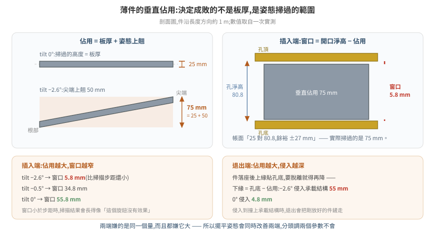
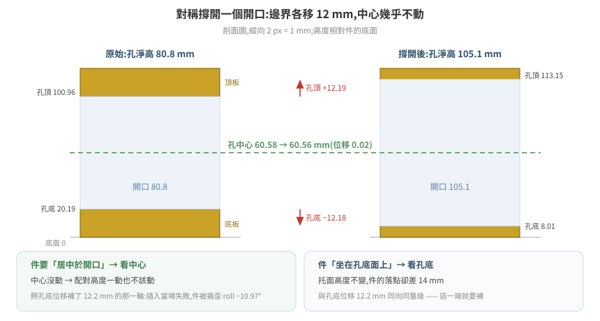
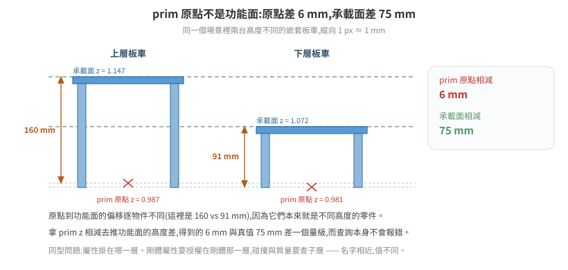

幾何的量測紀律:尺寸都對,件還是插不進去
一片 25 mm 厚的叉齒,要插進 80.8 mm 高的叉孔。帳面餘裕 55 mm,看起來綽綽有餘。 實測可插入的高度窗口只有 5.8 mm —— 比高度掃描的步距還小,所以連續四輪掃描 「毫無變化」,而每一輪都被讀成「這個旋鈕沒有效果」。
差距不在物理引擎,也不在參數,在對幾何的讀法。件的厚度不是它掃過的空間; 開口的邊界不是它的配對基準;prim 的原點不是它的功能面;而查詢腳本印出一個 數量級明顯不合理的值時,它不會報錯。
這篇把一段 6.0 場景調校裡「量錯 → 推錯 → 燒掉機時」的實例整理成可複用的判準。 素材是叉車取放棧板,但每一條的形狀在任何「薄件進窄縫」「配對高度」「讀資產尺寸」 的場景都一樣。
1. 姿態決定包絡,件的厚度不決定
叉齒是一片薄板,齒板厚 25 mm。但它有傾角,齒尖上翹 —— 它在垂直方向掃過的範圍 是板厚加上翹量,而不是板厚。

同一支叉齒,三種傾角下的實測(齒長約 1 m):
tilt |
齒尖上翹 | 垂直佔用 | 插進 80.8 mm 孔的高度窗口 |
|---|---|---|---|
| −2.6° | 50 mm | 75 mm | 5.8 mm |
| −0.5° | 21 mm | 46 mm | 34.8 mm |
| 0° | 0 | 25 mm(只剩板厚) | 55.8 mm |
誤判的典型形式是拿件的厚度去對縫的高度:25 對 80.8,得到「餘裕 ±27 mm, 幾何上進得去」。這個結論在該專案裡活了很久,期間還衍生出一個更糟的變體 —— 早期文件把齒板厚記成 45 mm,那是把一部分上翹量算進了板厚, 等於承認了「它比 25 厚」卻仍然用單一厚度去描述一個隨姿態變化的量。
1.1 同一個量在兩端都吃,而且方向相同
垂直佔用不只影響插入。件插進去、承載、再退出來,兩端都受它支配:
| 端 | 約束 | 佔用變大時 |
|---|---|---|
| 插入 | 可插入的高度窗口 = 孔淨高 − 垂直佔用 | 窗口變窄 |
| 退出 | 齒面下緣 = 孔底 − 垂直佔用 | 侵入承載結構越深 |
退出端的算術:棧板落座之後齒面上緣貼著孔底,要脫離接觸就得繼續下降, 而下降到哪裡由佔用決定。實測 −2.6° 時齒面下緣會落到承載面下方 55 mm —— 那個位置有板車本體,叉齒降不下去,於是退出時齒面維持高位,把剛放好的棧板鏟走。 0° 時侵入只有 4.8 mm。
兩端嫌的是同一個量,而且都嫌它大。 這一點決定了處置方向: 把姿態擺平會同時改善兩端,而「插入調一個參數、退出調另一個參數」是走不通的 —— 該專案先前正是照後者的框架在調,結論寫成「插入與退出的最佳傾角本來就不同」。
1.2 改姿態就要重校配對高度,兩者是耦合參數
把傾角從 −2.6° 改到 −0.5°,齒尖上翹少了 29 mm,齒面在孔內的相對位置整個變了。 只改傾角、沿用為舊傾角校出來的高度,實測結果是齒底比孔底還低 1.1 mm, 車前進時提早 450 mm 就把棧板推走 —— 看起來像「傾角改錯方向」,實際是配對值沒跟著動。
耦合參數要一起動的通則見 19 調參實驗方法論 §2。 在幾何這一層,判斷哪些值耦合有個現成的問法:這個值當初是在什麼姿態、什麼碰撞 近似、什麼開口尺寸下校出來的? 那些前提裡任何一項變了,它就要重校。
2. 開口變大時,配對高度跟著中心走還是跟著邊界走
把叉孔從 80.8 mm 撐到 105.1 mm,是以孔中心對稱撐開的(上下板各削薄), 棧板外表面完全不動。四個數字:
| 孔淨高 | 孔底(相對棧板底面) | 孔頂 | 孔中心 | |
|---|---|---|---|---|
| 原始 | 80.8 mm | 20.19 mm | 100.96 mm | 60.58 mm |
| 撐開後 | 105.1 mm | 8.01 mm | 113.15 mm | 60.56 mm |
| 位移 | +24.3 | −12.18 | +12.19 | −0.02 |

邊界移了 12 mm,中心移了 0.02 mm。 而齒面要做的事是「居中於孔」, 所以配對高度一動也不該動。
實際發生的是反過來:把孔烘回 80.8 mm 那一輪,順手照「孔底上移 12.2 mm」
把齒面高度也上調 12.2 mm。取貨當場失敗 —— 十幾輪來第一次連取貨都不過:
棧板被撬歪 roll −10.97°、離槽位 −1.006 m。下一輪把高度改回原值,取貨立刻通過。
2.1 但另一端確實跟著孔底走
同一次幾何變更,對「棧板坐在齒上的高度」的影響完全不同:
同一個放貨指令(齒面高度相同)
孔 105.1 mm → 棧板插入時 z = 1.110
孔 80.8 mm → 棧板插入時 z = 1.096
↑ 差 14 mm,與孔底位移 12.2 mm 同向同量級
因為這時候管事的接觸是棧板的孔底面壓在齒面上:孔底相對棧板底面越高, 同一個齒面高度就把棧板托得越低 —— 孔底 20.19 mm 那一版比 8.01 mm 那一版低 14 mm。 所以放貨的落點高度要跟著孔底補,而取貨的居中高度不用。
一次幾何變更,對不同的配對關係有不同的參考特徵。 動手補償之前先問:這個高度是要讓誰對上誰? 是「件要居中於開口」就看中心;是「件坐在某個面上」就看那個面。
這也是為什麼「改一個幾何、掃一遍所有相關參數」通常比「照位移量統一補」可靠: 統一補的前提是所有配對關係共用同一個參考特徵,而那個前提很少成立。
3. prim 原點不是功能面
同一個場景裡兩台嵌套板車,它們的 prim 原點 z 幾乎一樣,承載面差了 75 mm:
| prim 原點 z | 承載面 z | 原點 → 檯面的偏移 | |
|---|---|---|---|
| 上層板車 | 0.987 | 1.147 | 160 mm |
| 下層板車 | 0.981 | 1.072 | 91 mm |
| 差 | 6 mm | 75 mm | — |

兩台是不同高度的板車,原點到檯面的偏移本來就不同。拿 prim z 相減去推承載面高度差, 會得到 6 mm,而真值是 75 mm。 在需要 mm 級對位的場景,這個誤差直接讓件放到 一個不存在的高度上。
同一類問題在物理屬性上的形狀是「屬性掛在哪一層」:
/target_pallet/target_pallet Rigid=True Coll=False ← 剛體屬性授權在這層
├─ …/SM_RecycledWoodPallet_A04_01 Rigid=False Coll=True mass=20 ← 碰撞屬性查這層
└─ …/Cube(貨物) Rigid=False Coll=True mass=20
這個剛體的總質量是 40 kg(兩個子 collider 相加),不是 20 kg —— 而「20 kg」被文件引用了很久,因為當初只 dump 到其中一個子層。 分層結構本身見 10 場景資產的物理結構; 這裡要記的是同一條判準的另一種說法:「這個名字指的是哪一層」要先確定,再讀值。
4. 量測方法本身會給出「看起來合理」的錯值
以下每一種都不會報錯,輸出也都是格式正確的數字。
| 查法 | 錯的長相 | 正解 |
|---|---|---|
數某區域內的頂點,0 命中 判為空腔 |
孔、實心區域內部、剛好沒頂點,三者輸出完全相同 —— 據此量到的「孔淨高 18 mm」低估真值 4.4 倍 | 射線與三角形求交:交點沿軸排序,成對的區間是實體,實體之間才是空腔 |
| 用三角形的座標 extent 近似佔用 | 一個跨全寬的斜三角把整條帶標成「佔滿」,兩個 z 帶都得到「實心」的假結果 | 點內外測試(point-in-mesh)逐點判 |
stage.Traverse() 數 mesh |
CAD 轉出的資產回 0,被讀成「轉換失敗、空殼」 | 先問 stage.GetPrototypes(),非 0 就換讀法(見 21 篇 §3) |
| 用 prototype 的索引排除非零件幾何 | GetPrototypes() 的順序跨 Stage.Open 不穩定 —— 同一份檔第二次執行,寫死的索引把 9 個零件一起排除,輸出看起來完全正常 |
用內容特徵識別(mesh 數 / 三角形數 / 尺寸),見 21 篇 §3.1a |
| 讀 world AABB 當尺寸 | 有傾角的物件被撐大:真高 121 mm 的棧板量到 168.8 mm | 讀局部座標或 ComputeUntransformedBound(見 21 篇 §6.1) |
| 拿不同截面的上下緣相減 | 孔底取自 x=5.10、孔頂取自 x=4.61 → 「淨高 57 mm」。沒有任何一支叉齒需要同時滿足這兩個數字 | 每個截面只跟它自己位置的上下緣比 |
| 離線讀 USD 推 runtime 位置 | 讀到的是 authored 姿態 | 見 §4.3 |
4.1 單位與軸向要逐物件自推,不能寫死
同一份 stage 裡,不同子樹的局部座標單位可以不同 —— 實測棧板是公分、板車是公釐, 因為父節點 xform 的 scale 不同。高度軸也不保證是索引 2:同一支腳本裡, 棧板的最薄軸是索引 2、板車是索引 1。
兩者疊加的實測後果是印出 1120000.0 mm 這種值。它明顯錯,但前提是你把它印出來看;
而換一組數字它就不明顯了 —— 把局部單位當成公尺去換算,80.77 mm 的叉孔會印成
8077 mm,同樣不會報錯。
穩健的寫法是從資料本身推,並且用一個已知真值做範圍檢查:
hz = min(range(3), key=lambda k: ext[k]) # 最薄的那軸 = 板件的高度軸
PALLET_MM = 121.0 # 這顆資產的已知總高
unit_mm = PALLET_MM / ext[hz] # 逐顆自推,不寫死
if not (8.0 < unit_mm < 12.0):
raise RuntimeError("單位換算異常:ext=%.4f → unit_mm=%.2f(預期 ~10)"
% (ext[hz], unit_mm))
那個 raise 是重點。沒有它的版本會照樣往下跑,而且輸出訊息長得像成功 ——
「孔撐到標準:80.8 → 100.0 mm」這行照印,實際寫進 USD 的是換算錯的局部尺寸。
⚠ 最薄軸法只對明顯扁平的物件有效,長寬比接近 1 的物件會判錯,而且判錯不報錯。
4.2 傾角撐大 AABB:知道這條規則不會讓你想起它
「有傾角的物件不能用 world AABB 讀尺寸」這條在該專案寫進通用知識庫之後, 兩小時內又踩了一次:算齒尖有沒有超出孔頂時,把棧板的局部孔高直接加到它的 世界 z 上,忽略了棧板沿滑軌約 2.5° 的 pitch。孔沿長度方向 1.05 m, pitch 讓孔頂在前後緣差 45.8 mm,而齒尖所在位置的孔頂比棧板中心低約 22 mm。 據此算出的「齒尖超出孔頂 2.3 mm」是虛構的。
同源的第三種形狀:用世界座標畫某個面的高度圖判平整度,−2.62° 的安裝傾角會 顯示成 43 mm 的「階梯」(斜率 × 跨距 ≈ 2.62° × 0.93 m)。判凹凸前要先扣掉斜率。
知道規則不等於會在對的時刻想起它。把檢查做進腳本: 讀尺寸的函式一律走局部座標,要用世界座標時先印出物件的旋轉量, 讓「這東西是斜的」出現在輸出裡,而不是留在記憶裡。
4.3 authored 姿態不等於 runtime 姿態
離線開 USD 拿到的是資產被 author 的姿態。對於被關節驅動的部件, 它相對父節點的偏移在不同關節角度下不同:
authored 姿態(fork_tilt z = −0.026) 齒最低點 0.060 → 偏移 +0.086
抬升後 (fork_tilt z = +1.282) 齒最低點 1.336 → 偏移 +0.054
差 32 mm —— 比整個餘裕還大。所以不能用離線幾何推算 runtime 的齒面位置。 要拿到動作瞬間的幾何,只有把機構停在那個姿態、等靜止再量; 而且要真的靜止:件在動時掃出來的位置與靜止後差 1.4 m(掃到 x=2.87,靜止後 4.29)。
離線量測適合的是與姿態無關的量:件本身的尺寸、孔的淨高、零件間的相對配置。
4.4 正對照要挑同類的樣本
查詢回空時先用一個你確定存在的對象跑同一個查法 —— 這條大家都知道。 比較少被注意的是對照組要能區分「方法有效」與「方法無效」。
實例:用 stage.Traverse() 數 mesh 得到 0,做了對照 —— 換一份美術資產跑同一段程式,
三角形數與另一份文件記錄的值完全吻合,對照通過。但美術資產沒有 instancing,
CAD 資產全部有。對照組落在方法有效的那一側,於是驗證了一個並不成立的推廣,
接著整條推論鏈(「轉換失敗」→「原始檔有問題」→「這條管線不產幾何」)全部作廢。
對照組與待測對象要在你懷疑的那個維度上同類。 拿沒有 instancing 的檔驗證「我數得到 mesh」,不能保證對有 instancing 的檔成立。
5. 驗證用行為,不用回讀
寫進去、讀回來、值對了 —— 這個迴路完全不觸及物理引擎有沒有採用。
set_phys_attr / get_phys_attr 這類介面兩端都只碰 USD 層。
實測:把 maxLinearVelocity = 0.01 烘進 USD(48 個剛體)、靠場景重載生效,
回讀 0.00999… authored=True,再跑一趟真正的取貨 ——
棧板 21.6 秒移動 1.177 m = 0.054 m/s,是上限的 5.4 倍。
runtime 授權那條路徑更早就試過,正對照用的是彈道:給棧板 physics:velocity = (0,0,10),
1.5 秒後應該上升約 4 m(扣掉重力),實測 Δz = +0.0000。連初速都沒被採用。
彈道比取貨乾淨,因為它是純速度積分 —— 沒有接觸、沒有穿透修正,
不會混進「位移是被接觸推的」這種解釋。
| 授權路徑 | PhysX 採用 |
|---|---|
runtime 寫剛體屬性(physxRigidBody:* / physics:velocity) |
❌ 這個場景實測不採用 |
| 載入時 author 進 USD 的剛體速度上限 | ❌ 也沒有被強制執行 |
載入時 author 進 USD 的剛體質量性質(physics:centerOfMass) |
✅ 採用(2026-08-14 正對照) |
runtime 寫關節 drive(drive:*:physics:maxForce) |
✅ 門檻掃描,行為在 1000→2000 之間翻轉 |
🔑 所以答案是「只有速度屬性不被採用」,不是「整類剛體屬性」。
正對照:把一顆棧板的 physics:centerOfMass 推到本地 x = 2 m(遠在支撐面外)、
z 維持不動(只改一個自由度),另外兩顆維持原值當同框負對照。場景重載後 ——
| prim | 第 1 次取樣 | 8 秒後 |
|---|---|---|
| 受測那顆 | 偏 497 mm、升 527 mm、yaw +52.4° | yaw −43.6°(還在翻滾) |
| 兩顆負對照 | 原位 | 逐位元相同 |
⚠ 這條的用法是:採不採用要逐屬性各驗一次,不可以從一個屬性推論另一個。 先前那個「這個旋鈕沒有被證實有效過」的結論只適用於速度上限, 不可以擴大成「烘進 USD 沒有用」——那會擋掉整條「改資產」的路。
同一支工具、同一條 runtime 路徑,關節生效而剛體不生效。 所以不能從一個推另一個 —— 關節 drive 每步被讀,剛體的這些屬性看來只在載入時讀一次。 參數無聲失效的完整清單見 17 篇。
代價很具體:在查明之前,已經有 40 輪實驗把「限速」當成有效變因在比較。 那 40 輪裡這個變因從來沒有被施加過,所有「限速無效」的結論都是空的。
5.1 怎麼設計那個可觀測量
判準是「若生效則某個量必然改變」,而且改變幅度要大於該量本身的雜訊。
質量的例子:把棧板剛體從 40 kg 改成 150 kg,用同一個舉升動作的關節下垂量驗:
z1 |
z2 |
|
|---|---|---|
| 40 kg | 0.074 | 1.110 |
| 150 kg | 0.063 | 1.095 |
| 多下垂 | 11 mm | 15 mm |
下垂是 PD drive 在負載下的穩態誤差,質量若沒被採用它不會變。 這個量同時滿足三件事:在生效路徑上、幅度遠大於逐輪浮動、而且每一輪都會產生, 不需要專門跑一輪驗證。
⚠ 設計可觀測量時最容易漏掉的是無效輪判定。同一個驗證失敗過兩次, 兩次都輸出了「看起來像答案」的數字:一次是錄製窗口太短,停在件還沒接觸的階段, 輸出「位移 0.000」;一次是高度沒設對,件是被推的而不是被承載的, 而推移走的是位置層修正,本來就不歸速度上限管。 腳本要自己印出有效性判定(「有沒有進入帶貨階段」),不要讓無效輪次輸出數字。 正對照的完整設計原則見 19 篇 §1。
6. 離線讀 USD 的實務
量幾何不需要動到執行中的模擬。開一個唯讀 stage 讀 authored 值, 比在跑的場景裡用視窗式點雲掃描精確 —— 讀的是值本身,不是點雲推算。 實測在剩餘記憶體充裕(109 GB)的機器上,對執行中的模擬沒有可觀測干擾。
6.1 讓 pxr 在容器裡可用
Isaac Sim 容器沒有 usdcat,而 python.sh 不帶 kit 的 PYTHONPATH。
核心 USD 庫在 extension 快取裡:
U=$(ls -d /isaac-sim/extscache/omni.usd.libs-*/ | head -1)
export PYTHONPATH=$U
export LD_LIBRARY_PATH=$U:$U/lib:$U/bin
/isaac-sim/kit/python/bin/python3 -c "from pxr import Usd; print('pxr OK')"
⚠ 只設 PYTHONPATH 會失敗在 ImportError: libusd_tf.so: cannot open shared object file
—— Python 模組找得到了,它背後的 C++ 動態庫還沒有。兩個都要設。
6.2 要寫入時:臨時容器、rw、--user 0:0
資產目錄在正式容器裡多半是唯讀掛載(docker inspect 看得到 rw=false)。
要改就另開一個 --rm 的臨時容器把同一個目錄掛成 rw,而且要 --user 0:0
—— image 的預設 user 不是 root,不加會得到「Unable to open file for writing」。
掛載路徑要與正式容器一模一樣,原因見下一條。
6.3 USD 必須在原位改
USD 用相對路徑引用其他檔。把場景複製到 /tmp 再編輯,引用會解析不到,
而它不會報錯:
在原位開 prim 總數 4546 目標剛體找得到
複製到 /tmp prim 總數 4186 目標剛體 = 0
腳本裡放一行正對照就能擋住:開檔之後先數 prim 總數,不等於已知值就中止。
4186 這個數字本身很合理,沒有這道檢查會一路跑到底,產出一個「改過但什麼都沒改到」
的檔案。
6.4 讀 authored 值,不要推點雲
要量 box collider 的尺寸,直接讀 UsdGeom.Cube 的 xformOp:translate 與
xformOp:scale(配 extent)。該專案一度把這件事記為「取不到」,
改用執行期的視窗掃描推算,得到帶 ±5 mm 誤差的值;
改讀 authored 值之後,那一版的叉孔淨高是 100.00 mm 整(先前推算的是 99.87 mm),
而 13.25 mm 這種零件內縮量也一次讀得出來。
⚠ 這顆棧板的碰撞孔在不同版本之間換過幾次值(原始網格 80.8 → box 化 100 → 撐到 105.1 → 烘回 80.8),§2 用的是其中兩版。這裡要記的是讀法,不是那個數字 —— 每次重烘之後都要重讀,不能沿用上一版的量測值。
⚠ 反過來也成立:authored 值只描述資產,不描述現場。 件被推到哪、關節停在哪、接觸有沒有讓它陷進去,這些只有 runtime 量得到(§4.3)。
7. 檢查清單
量幾何之前:
- [ ] 要進去的是「件的厚度」還是「件掃過的包絡」?件有傾角嗎(§1)
- [ ] 這個配對高度是「居中於開口」還是「坐在某個面上」?參考特徵是中心還是邊界(§2)
- [ ] 讀的是 prim 原點還是功能面?兩者的偏移逐物件不同(§3)
- [ ] 用的是點/頂點統計還是射線求交 / 點內外測試(§4)
- [ ]
stage.GetPrototypes()有幾個?非 0 就換讀法(§4) - [ ] 高度軸與單位是從資料推的,還是假設的?有沒有用已知真值做範圍檢查(§4.1)
- [ ] 物件有傾角嗎?讀的是 world AABB 還是局部座標(§4.2)
- [ ] 相減的兩個值來自同一個截面嗎(§4)
- [ ] 這個量與姿態有關嗎?有 → 要在 runtime、靜止狀態下量(§4.3)
- [ ] 查詢回空時的正對照,與待測對象在懷疑的維度上同類嗎(§4.4)
改幾何或改屬性之後:
- [ ] 驗的是行為,不是回讀(§5)
- [ ] 那個可觀測量在生效路徑上、幅度大於雜訊、每輪都會產生(§5.1)
- [ ] 腳本會自己判「這一輪有沒有資格產生量測」(§5.1)
- [ ] 這個值當初是在什麼前提下校出來的?前提變了的都要重校(§1.2)
- [ ] 寫入 USD 是在原位改的嗎?prim 總數對得上嗎(§6.3)
8. 延伸閱讀
- 13 接觸與抓握的第一性原理 —— 為什麼調參順序是幾何→質量→offset→摩擦,幾何錯了後面全部白調
- 21 CAD 資產的判讀與轉換 —— instancing、單位、world AABB 三個陷阱的完整機制與轉換管線
- 10 場景資產的物理結構 —— 剛體/碰撞/質量各屬於哪一層
- 17 6.0 的物理調參 —— 參數無聲失效的五個條件
- 19 調參實驗方法論 —— 正對照、耦合參數、二元判準的檢定力
- 18 物理參數要去哪裡找 —— 未授權質量會被算成「網格體積 × 水的密度」
證據等級
本篇的每一個數值(25 mm 的板在 −2.6° 下佔 75 mm、可插入窗口 5.8 mm、邊界移 12 mm 而中心移 0.02 mm、兩台板車原點差 6 mm 承載面差 75 mm)都是單一場景在 2026-08 的實測,用離線讀 USD 的方式量的。方法可複用,數值不可照搬。
幾何推導的部分(姿態包絡、對稱撐開的邊界位移)是純幾何,任何人拿自己的尺寸 代進去都成立;而「哪個接觸在管事」這類判斷依賴那個場景的機構,不會自動轉移。
「剛體屬性回讀成功但 PhysX 不採用」那一條沒有官方文件佐證,是實測到的可重現 現象,機制未確認。
內部回溯用(未公開):docs 136 叉孔真實幾何、142 場景物理快照、 149 runtime 剛體授權不被採用、160 離線網格量測、168 instancing 與 box 幾何、 169 參數紀錄、170 垂直佔用與高度推導。